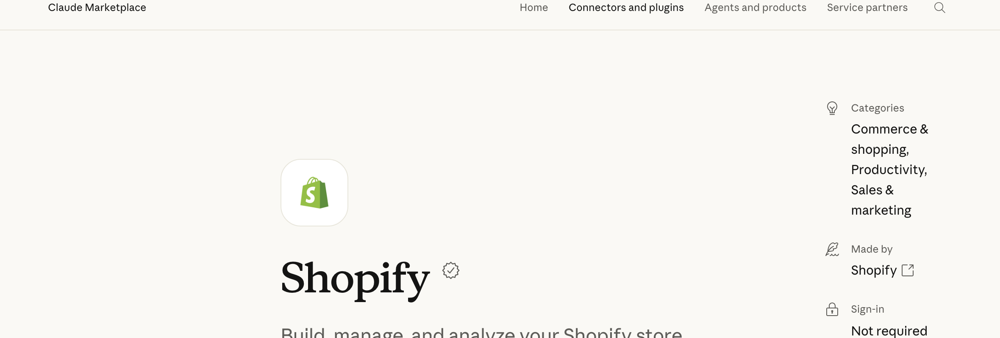
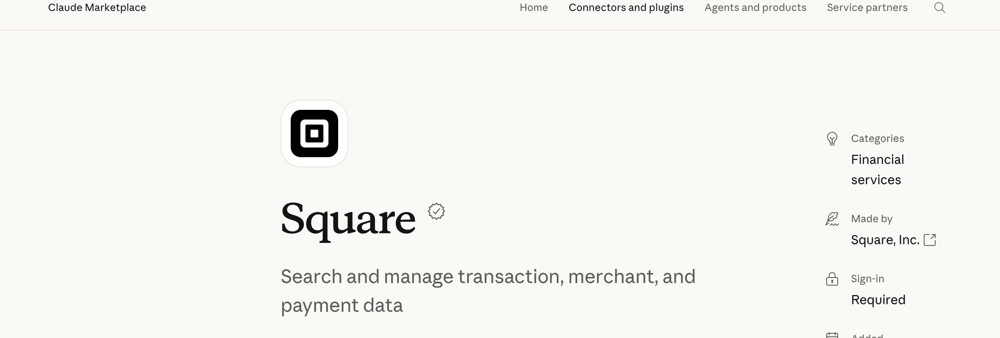
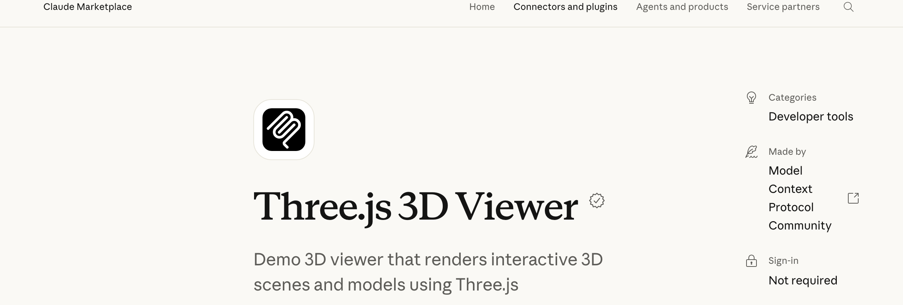
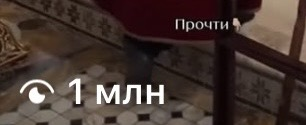

3D-панель бизнеса на Claude. Та, что выглядит на тысячи долларов, собирается за три шага
Подключаешь свои данные, и Claude превращает бизнес в трёхмерный мир: товары и фургоны доставки кликабельны, по клику открывается живая статистика. Пошагово, со скринами и промптами, которые можно вставить
Что это такое и зачем
Скучная таблица с цифрами никого не держит. 3D-панель - это тот же отчёт, но в виде пространства, по которому ходишь как по игре: кликаешь на товар или фургон и видишь, что за ним
- Товар кликабеленнажал на позицию - открылись продажи и остаток по ней
- Доставка на картефургоны видно как точки в городе, а не строки в выгрузке
- Склад как мирбизнес разложен в трёхмерную сцену, а не в столбцы
- Цифры живыестатистика подтягивается прямо на объекты сцены
Главное - собрать это правильно. Третий шаг проваливает большинство, и ниже я разбираю, в чём именно он
Три шага
Подключить данные
Свои цифры в Claude через коннектор Shopify или Square. Панель рисуется по настоящим данным
Попросить 3D-мир
Claude раскладывает бизнес в трёхмерную сцену, где каждый товар и фургон - кликабельный объект
Собрать на Three.js
Тот самый шаг, где спотыкаются. Объекты оживают, по клику открывается статистика за ними
Подключи свои данные к Claude
Коннектор - это мост между Claude и сервисом, где уже лежат твои цифры. Для интернет-магазина это Shopify, для кофейни, точки или услуг - Square. Оба коннектора официальные, лежат в каталоге Claude


Открой коннекторы в Claude
Куда нажать. В Claude зайди в Настройки → Коннекторы и найди нужный: Shopify для интернет-магазина или Square для офлайн-точки
Что увидишь. Карточку коннектора с кнопкой «Add to Claude» и пометкой, кто его сделал
Что это даёт. Это одноразовая настройка, дальше коннектор работает для каждой новой панели
Подключи свой аккаунт
Куда нажать. Нажми «Add to Claude», войди своим аккаунтом Shopify или Square и подтверди доступ
Что увидишь. Claude получит доступ к твоим заказам, товарам, остаткам и продажам
Что это даёт. Панель строится на твоих настоящих цифрах, а не на выдуманном примере
Попроси Claude собрать трёхмерный мир
Данные подключены - теперь описываешь словами, что хочешь увидеть. Claude разложит бизнес на сцену, где у каждого товара и каждого фургона своё место
Опиши сцену обычными словами
Куда нажать. Напиши задачу в чат. Вот промпт, с которого можно начать:
Что увидишь. Claude соберёт сцену, где бизнес виден целиком, как пространство
Что это даёт. Ты смотришь на бизнес сверху, а не листаешь выгрузку строк
Скажи собрать на Three.js - здесь спотыкаются почти все
Three.js - бесплатная открытая библиотека 3D-графики для браузера. Именно на ней сцена перестаёт быть плоской картинкой и начинает двигаться. Если про неё не сказать, Claude соберёт обычный график - это и есть ошибка, на которой проваливается большинство

Назови библиотеку прямо в промпте
Куда нажать. Попроси собрать сцену именно на Three.js и сразу - кликабельность. Промпт:
Что увидишь. Claude напишет сцену на Three.js и покажет её прямо в чате: объекты вращаются и реагируют на клик
Что это даёт. Панель ведёт себя как видеоигра - по любому объекту кликаешь и видишь статистику за ним
Грабли, о которые спотыкаются
- Забыть про Three.js. Это главная ошибка. Без этого слова в промпте Claude соберёт плоский график вместо живой сцены
- Сначала данные, потом картинка. Подключи Shopify или Square до того, как просить панель, иначе она нарисуется на пустых цифрах
- Проси кликабельность сразу. «Сделай каждый объект кликабельным, по клику - статистика» в первом же промпте, а не отдельной правкой потом
- Коннектор под свой бизнес. Shopify - для интернет-магазина, Square - для офлайн-точки, кофейни, услуг. Бери тот, где у тебя уже лежат данные
Где смотреть подробности
claude.com/marketplace/connectors/shopify- официальный коннектор Shopify для Claudeclaude.com/marketplace/connectors/square- коннектор Square от Square, Inc.claude.com/marketplace/connectors/threejs-3d-viewer- Three.js 3D Viewer, показывает сцены в чатеthreejs.org- сама библиотека Three.js: открытая, бесплатная, 3D в браузере
Панель - это витрина, а не система
3D-панель - один инструмент. Я одна, в декрете, без команды собрала на нейросетях целый завод: контент, воронки, продажи. Красивая панель показывает цифры, но что с ними делать, какие решения принимать и как превратить данные в заявки и деньги - за тебя никто не решит
Блог растёт на контент-заводе из ИИ-агентов
Мой блог ведут ИИ-агенты: находят темы, которые уже залетели, пишут сценарии, собирают рилсы с цифровым двойником и выдают материалы по кодовым словам. Я проверяю и принимаю решения




Три рилса по миллиону просмотров и больше, без рекламы и без команды
Растут деньги и аудитория клиентов
Ту же систему из нейросетей я собираю для экспертов: контент, автоворонки, боты, сайты и продажи. Дизайнер, монтажёр, таргетолог, копирайтер и менеджер по продажам в проекте не нанимались, их работу закрыли нейросети
Собрать 3D-панель - красиво, но это витрина. Превратить данные бизнеса в систему, которая сама подсказывает, что продавать, где теряются деньги и куда расти, - другая работа, и начинается она с разбора твоих задач
На консультации разбираю, как выстроить такую систему у тебя
Напиши слово
мне в личку Telegram
НаписатьМои каналы и страницы